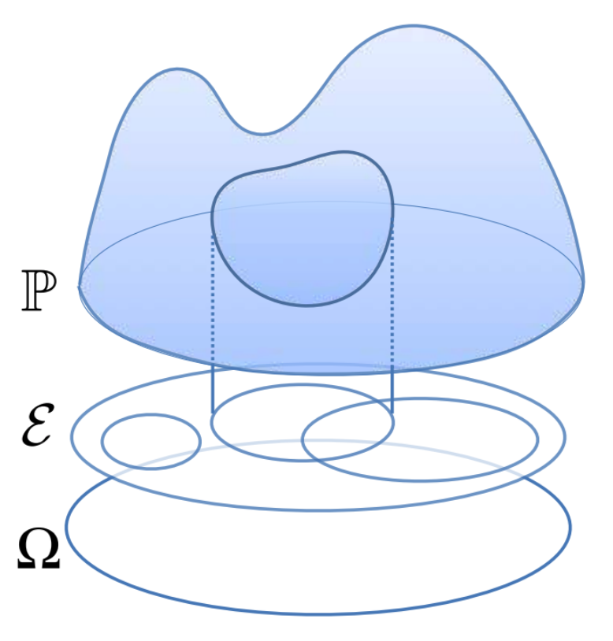
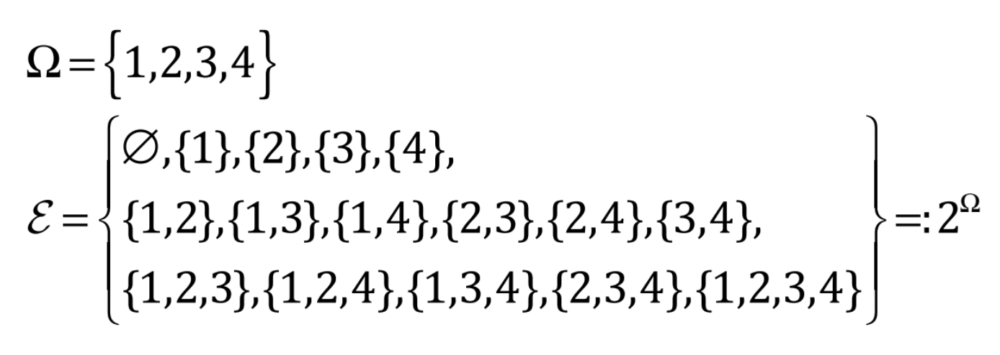
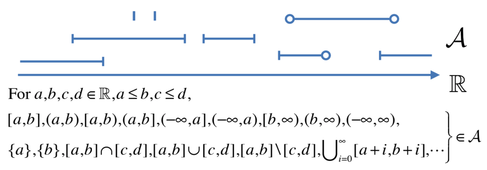
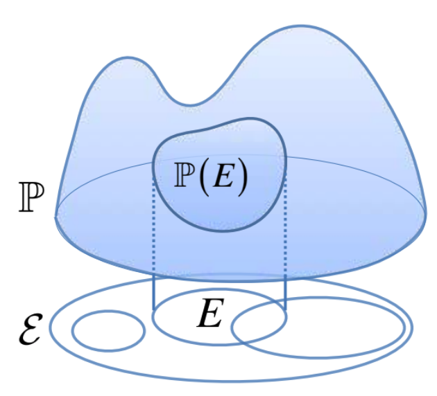
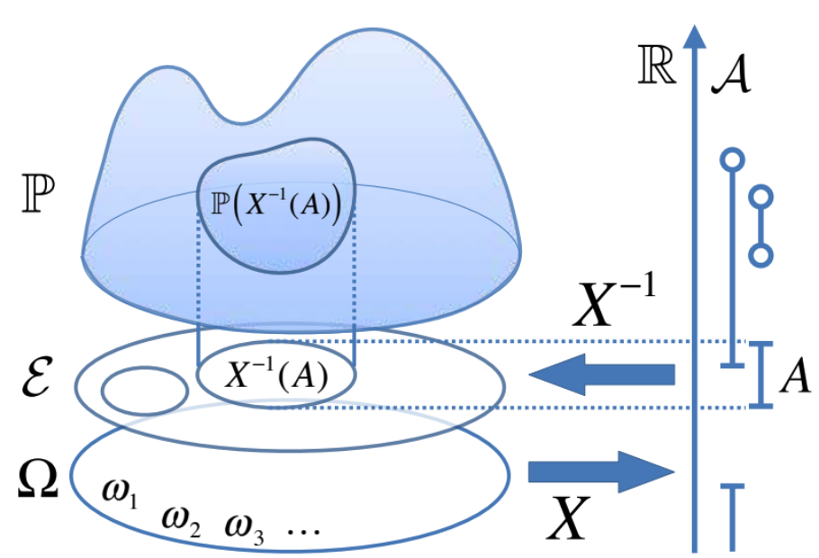

- 講師：木立尚孝
講義概要
- 09/27 (Fri) 10:25-12:10
- 10/04 (Fri) 10:25-12:10
- 10/11 (Fri) 10:25-12:10
- 10/18 (Fri) 10:25-12:10
- 10/25 (Fri) 10:25-12:10
- 11/08 (Fri) 10:25-12:10
- 11/15 (Fri) 10:25-11:30(Lecture) / 11:30-12:10: (Test)
Section1.1 STATISTICAL ANALYSIS
- Genomic data has recently become available, so the analyzing methods still its infancy at the century scale.
- It is very important how much information can be extracted from genomic and other omic data.
- Data-driven Research
- Development of measurement, communication, computing technologies.
- data science, e-science
- Statistics, computer skill, artificial intelligence, machine learning.
- Statistical Analysis
- Subjects and measurements are often conclude the random events, such as noise.
- Aiming for finding the "True" distribution, and inferencing on that distribution.
- Power of Statistical Methods
- Amount of information we can extract "Many and high" / "Few or low" quality
- Event infinite number of data cannot answer all questions. ex) we couldn't answer "what is the number of eyes on the next dice."
- Data dependency.
Section1.2 PROBABILITY DEFINITIONS
- Probability:
- Mathematical Probability: The probability of an event consisting of n out of m possible equally likely occurrences, defined to be n / m
- Statistical Probability: Each event is random, but if you repeat it a lot, you can see the probability that each event occurs.
- Subjective Probability: A type of probability derived from an individual's personal judgment or own experience about whether a specific outcome is likely to occur.
- ※ Mathematical Probability is the most strict and basic.
Probability space \(\left(\Omega, E, P\right)\)
|  |
$$\begin{aligned}&\Omega: \text{Set, Samplemspace}\\&E: \text{Events,}\sigma\text{-algebra}\\&P: \text{Probability measure}\end{aligned}$$
|
Sample Space
- The sets of elementary events.ex.)
- The number of eyes on the dice.
- All possible genomes.
- All possible gene expression profiles
- \(\omega_i\in\Omega\) is the identifier of possible individual stochastic phenomena.
\(\sigma\)-algebra
$$
\begin{aligned}
&\varepsilon= \left\{E_1,E_2,\cdots|E_i\subseteq\Omega:\text{event}:\sigma\text{-algebra} \right\}\\
&\Rightarrow \varnothing,\Omega,\left(E_i\setminus E_j\right),\left(\bigcup_{i=1}^{\infty}E_i\right),\left(\bigcap_{i=1}^{\infty}E_i\right)\in\varepsilon
\end{aligned}
$$
- The sets of Events.
- Each event \(E_i\subseteq\Omega\)
- Include Empty set \(\varnothing\), universal set \(\Omega\)
- Closure to variable "Set Operation". (ex. Union, intersection, complement)
example)
| discrete set | Real set |
|---|---|
|  |  |
| Power set | Borel set \(\mathcal{A}\) |
Probability measure
|  |
$$\begin{aligned}&\mathbb{P} : \mathcal{E} \rightarrow \mathbb{R} \\& 0 \leq \mathbb{P}(E) \leq 1, E \in \mathcal{E} \\&\mathbb{P}(\Omega)=1, \mathbb{P}(\varnothing)=0 \\&\text { For } E_{1}, E_{2}, \cdots \in \mathcal{E}, \text{ s.t. } E_{i} \cap E_{j}=\varnothing, \forall i \neq j \\&\mathbb{P}\left(\bigcup_{i=1}^{\infty} E_{i}\right)=\sum_{i=1}^{\infty} \mathbb{P}\left(E_{i}\right)\end{aligned}$$
|
Each event is assigned a value that indicates the likelihood or probability of occurrence.
Random variable
|  |
$$\begin{aligned}X: &\text{random variable}\\\Leftrightarrow &X : \Omega \rightarrow \mathbb{R} \\ &\text { s.t. } X^{-1}(A) \in \mathcal{E}, \forall A \in \mathcal{A} \\&X^{-1}(A) :=\{\omega \in \Omega \mid X(\omega) \in A\}\end{aligned}$$
|
Section1.3 PROBABILITY TERMS AND PROPERTIES
- Probability distribution function \(F_x\) (cumulative distribution)
- Probability density function \(f_x\)
$$F_x\left(x+dx\right)-F_x\left(x\right)=:f_x(x)dx$$
- Conditional Probability
- Joint Probability distribution
$$(X,Y): \Omega\rightarrow\mathbb{R}^2; (X,Y)(\omega) = \left(X(\omega),Y(\omega)\right)\\\left(X,Y\right)^{-1}(A) = \left\{\omega\in\Omega|\left(X(\omega),Y(\omega)\right)\in A\right\}$$
- Independent random variables
- Expected Value
- Variance
- Covariance:
$$\begin{cases}X,Y: \text{independent random variables}\Rightarrow \mathrm{Cov}(X,Y) = 0\\X,Y: \text{independent random variables}\not\Leftarrow \mathrm{Cov}(X,Y) = 0 \end{cases}$$
- Indicator Function:
$$\mathbb{I}_A(x)=\begin{cases}1 & x\in A\\0 & x\notin A\end{cases},A\in\mathcal{A}$$
- Marginalization